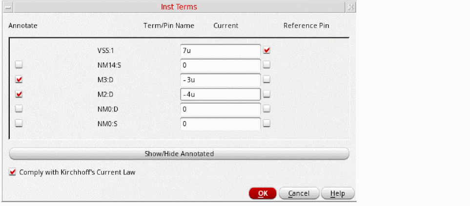

Creating a HighCurrent Design Intent
To create a design intent for a net, pin, or instance terminal with currents:
-
Right-click a net, pin, or instance terminal in the Navigator or on the canvas and choose Design Intent – Create Design Intent – HighCurrent.
-
Specify a name for the design intent.
For the category HighCurrent, the name given for the design intent is only displayed in the Navigator. On the canvas, the current value is displayed as the annotation for each member instance terminal, for example5A. The annotation for the reference terminal has an additional asterisk to signify that it is the reference terminal, for example5A*. -
In the Style field, Arrow is preselected for the category HighCurrent. If required, specify a color, font size, and font to identify the design intent annotation on the canvas.
For currents with positive polarity, the arrow points outward from the pin. For currents with negative polarity, the arrow points inward to the pin. - Define the requirements for the following pre-defined profile properties:
-
(Optional) Click Setup Pin/InstTerm Currents.
The Inst Terms dialog box opens. It lists all instance terminals available on the net and lets you define the current for each instance terminal to be sourced.
 -
(Optional) Select the Annotate check box to create an annotation and a glyph on the canvas for the required terminals. The current value is used as the annotation for each terminal.
- (Optional) Click Show/Hide Annotated to toggle the display of the instance terminals selected for annotation in the Inst Terms dialog box.
-
(Optional) Select the Comply with Kirchhoff's Current Law check box to ensure that the sum of all currents entering and exiting a node is zero.
For example, to comply when7uis the sum of all currents, the reference current must be-7uto give a total current of0. Conversely, if the sum of all currents is-3u, the reference current must be3u. -
Click OK.
If you attempt to close the Inst Terms dialog box with the Comply with Kirchhoff's Current Law check box selected and the total current does not equal zero, a warning message is displayed. -
In the Create Design Intent form add any notes to assist in the implementation of the design intent and click OK.
A HighCurrent design intent is created on the canvas, and the annotation label displays the total current.When the design intent is transferred from Schematics XL to Layout XL, the callback ciDiPostTransferHighCurrent is run to split the current evenly between the mfactored members in Layout XL.
Related Topics
Creating a HighCurrent Design Intent for Multiple-bit Instances
Modifying Sample Profiles and Property Definitions
Adding Objects to a Design Intent
Return to top